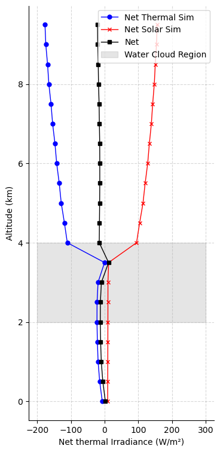

Advanced: Water Clouds#
In this notebook, we’ll add parametric water clouds to our simulations using the parameter_overrides mechanism. This is one of the simplest ways to include clouds — by specifying a cloud water content file directly in the simulation call.
import pyradtran # Registers the .pyradtran xarray accessor
from pyradtran import load_config
import matplotlib.pyplot as plt
import numpy as np
import xarray as xr
from pathlib import Path
import pandas as pd
import logging
# Suppress pyradtran log output for cleaner notebook cells
logging.getLogger('pyradtran').setLevel(logging.CRITICAL)
Setup: Define the Scene#
We create a simple single-timestep xr.Dataset representing a mid-latitude location on a spring day. The dataset includes coordinates for time, latitude, longitude, and altitude, as well as a surface temperature variable.
# ── Solar config ─────────────────────────────────────────────────────────────
cfg_solar = load_config()
cfg_solar.simulation_defaults.rte_solver = "disort"
cfg_solar.simulation_defaults.mol_abs_param = "reptran per_nm"
cfg_solar.simulation_defaults.source = "solar"
cfg_solar.simulation_defaults.wavelength_nm = [400, 3200]
cfg_solar.simulation_defaults.integrate_wavelength = True
cfg_solar.simulation_defaults.output_columns = ["zout", "lambda", "sza", "edir", "eglo", "edn", "eup", "enet", "albedo"]
cfg_solar.execution.max_workers = 16
cfg_solar.execution.cleanup_temp_files = False
solar_config_path = Path("config/cloud_solar.yaml")
cfg_solar.to_yaml(solar_config_path)
# ── Thermal config ────────────────────────────────────────────────────────────
cfg_thermal = load_config()
cfg_thermal.simulation_defaults.rte_solver = "disort"
cfg_thermal.simulation_defaults.mol_abs_param = "reptran medium"
cfg_thermal.simulation_defaults.source = "thermal"
cfg_thermal.simulation_defaults.wavelength_nm = [4500, 42000]
cfg_thermal.simulation_defaults.integrate_wavelength = True
cfg_thermal.simulation_defaults.output_columns = ["zout", "lambda", "sza", "edir", "eglo", "edn", "eup", "enet", "albedo"]
cfg_thermal.execution.max_workers = 16
cfg_thermal.execution.cleanup_temp_files = False
thermal_config_path = Path("config/cloud_thermal.yaml")
cfg_thermal.to_yaml(thermal_config_path)
print(f"Solar config: {solar_config_path}")
print(f"Thermal config: {thermal_config_path}")
# ── Input dataset ─────────────────────────────────────────────────────────────
N_timesteps = 1
ds = xr.Dataset(
coords={
'time' : pd.date_range('2025-04-04T12:00:00', periods=N_timesteps, freq='s'),
'latitude' : ('time', [51.3406321] * N_timesteps),
'longitude' : ('time', [12.3747329] * N_timesteps),
'altitude' : ('altitude', np.arange(0, 10, 0.5)),
},
data_vars={
'surface_temperature': ('time', [290] * N_timesteps), # Kelvin
}
)
ds
2026-04-20 11:26:36,116 - pyradtran.config - INFO - Configuration written to config/cloud_solar.yaml
2026-04-20 11:26:36,119 - pyradtran.config - INFO - Configuration written to config/cloud_thermal.yaml
Solar config: config/cloud_solar.yaml
Thermal config: config/cloud_thermal.yaml
<xarray.Dataset> Size: 192B
Dimensions: (time: 1, altitude: 20)
Coordinates:
* time (time) datetime64[ns] 8B 2025-04-04T12:00:00
latitude (time) float64 8B 51.34
longitude (time) float64 8B 12.37
* altitude (altitude) float64 160B 0.0 0.5 1.0 1.5 ... 8.5 9.0 9.5
Data variables:
surface_temperature (time) int64 8B 290Define a Water Cloud#
A water cloud in libRadtran is specified as a simple text file with columns for altitude (km), liquid water content (LWC, g/m³), and effective droplet radius (R_eff, µm):
# z LWC R_eff
# (km) (g/m³) (µm)
4.000 5.0 15.0
3.000 3.0 12.0
2.000 0.0 10.0
This defines a cloud layer between 2 and 4 km with increasing LWC and droplet size toward the cloud top. Let’s write this to a file at work/water_cloud.wc.
wc_content = """
# z LWC R_eff
# (km) (g/m^3) (um)
4.000 5.0 15.0
3.000 3.0 12.0
2.000 0.0 10.0
"""
wc_file_path = Path('work/water_cloud.wc')
wc_file_path.parent.mkdir(parents=True, exist_ok=True)
wc_file_path.write_text(wc_content)
print(f"Water cloud definition written to {wc_file_path}")
Water cloud definition written to work/water_cloud.wc
Run Solar and Thermal Simulations with parameter_overrides#
The parameter_overrides argument lets you inject or override any libRadtran input parameter at runtime. Here, we use it to set the wc_file 1D parameter, which tells libRadtran to read a one-dimensional water cloud profile from the file we just created.
This is equivalent to adding the line wc_file 1D work/water_cloud.wc to the libRadtran input file. Any parameter from the libRadtran documentation can be overridden this way.
ds_sim_solar = ds.pyradtran.run(
config_path=solar_config_path,
return_dataset=True,
save_to_file=True,
surface_temperature_var='surface_temperature',
parameter_overrides={
'wc_file 1D' : 'work/water_cloud.wc',
},
show_progress=False,
)
ds_sim_thermal = ds.pyradtran.run(
config_path=thermal_config_path,
return_dataset=True,
save_to_file=True,
surface_temperature_var='surface_temperature',
parameter_overrides={
'wc_file 1D' : 'work/water_cloud.wc',
},
show_progress=False,
)
Visualize the Irradiance Profiles#
We plot the net solar and thermal irradiance profiles as a function of altitude. The gray shaded region marks the cloud layer (2–4 km).
fig, ax = plt.subplots(figsize=(4, 9))
ds_sim_thermal.enet.sel(time='2025-04-04T12:00:00').plot(y='altitude', ax=ax, marker='o', color='blue', label='Net Thermal Sim', lw=1, markersize=5)
(ds_sim_solar.enet / 1e3).sel(time='2025-04-04T12:00:00').plot(y='altitude', ax=ax, marker='x', color='red', label='Net Solar Sim', lw=1, markersize=5)
net = ds_sim_solar.enet.sel(time='2025-04-04T12:00:00').values / 1e3 + ds_sim_thermal.enet.sel(time='2025-04-04T12:00:00').values
ax.plot(net, ds_sim_solar.altitude, color='black', label='Net', lw=1, marker='s', markersize=5)
# shade the region where the water cloud is present
ax.fill_betweenx(np.arange(2, 5), -200, 300, color='gray', alpha=0.2, label='Water Cloud Region')
ax.set_xlabel('Net thermal Irradiance (W/m²)')
ax.set_ylabel('Altitude (km)')
ax.legend()
ax.spines[['top', 'right']].set_visible(False)
ax.grid(True, linestyle='--', alpha=0.5)
ax.set_title('')
Text(0.5, 1.0, '')

Interpretation#
The plot above shows the vertical profiles of net irradiance for the cloudy atmosphere:
Net solar irradiance (red) decreases sharply within the cloud layer as sunlight is scattered and absorbed by cloud droplets.
Net thermal irradiance (blue) shows a strong gradient at the cloud boundaries — the cloud top emits strongly to space, while the cloud base receives thermal emission from below.
Total net irradiance (black) combines both components. Notice the strong radiative cooling at cloud top and warming at cloud base, which is characteristic of optically thick water clouds.
Other methdods to include clouds#
While parameter_overrides is the simplest way to include clouds, pyRadtran also supports more complex cloud representations:
from pyradtran.clouds import CloudLayer, CloudFileWriter
simple_cloud = CloudLayer(
z_bottom_km=2.0,
z_top_km=4.0,
lwc_g_m3=10.0,
)
cloud_file_writer = CloudFileWriter()
---------------------------------------------------------------------------
TypeError Traceback (most recent call last)
Cell In[33], line 10
3 simple_cloud = CloudLayer(
4 z_bottom_km=2.0,
5 z_top_km=4.0,
6 lwc_g_m3=10.0,
7 )
9 cloud_file_writer = CloudFileWriter()
---> 10 cloud_file_writer(simple_cloud, 'work/simple_cloud.wc')
TypeError: 'CloudFileWriter' object is not callable